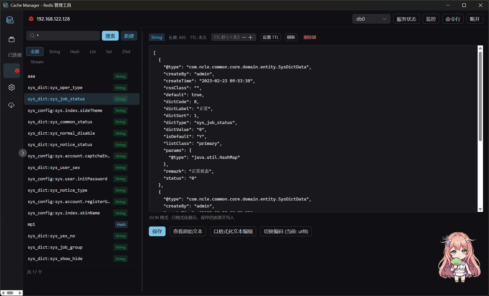
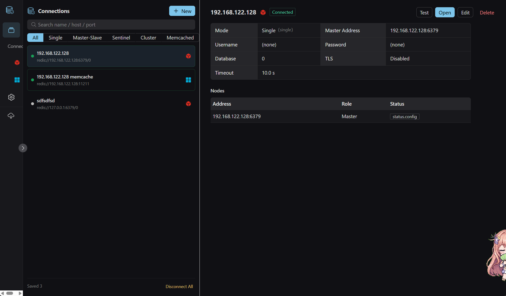
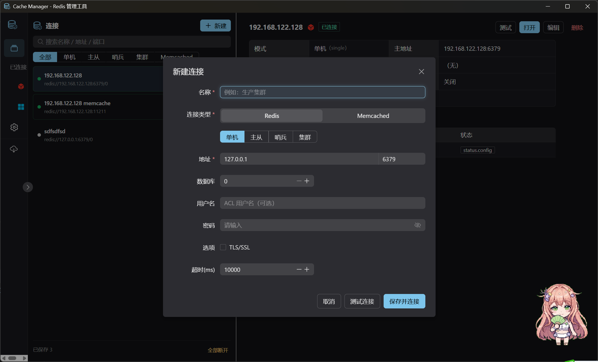
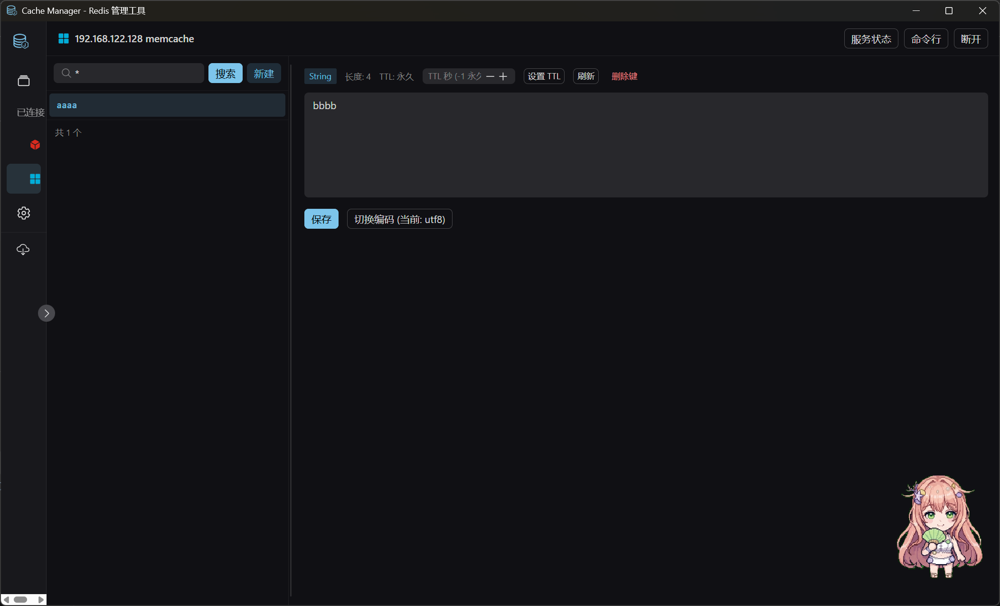
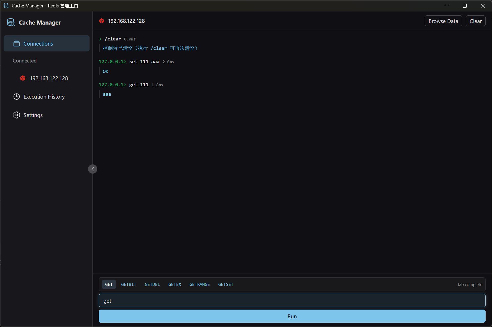
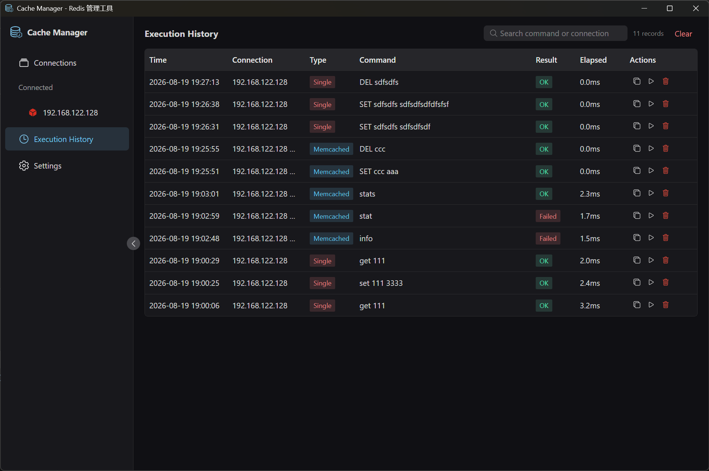
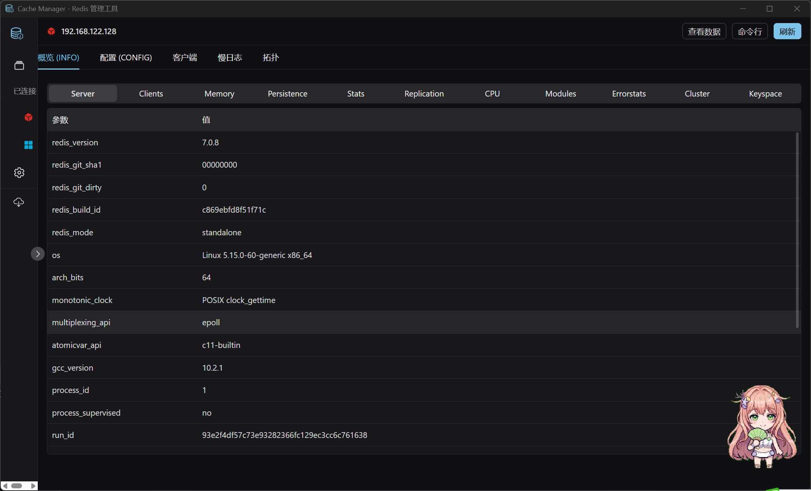
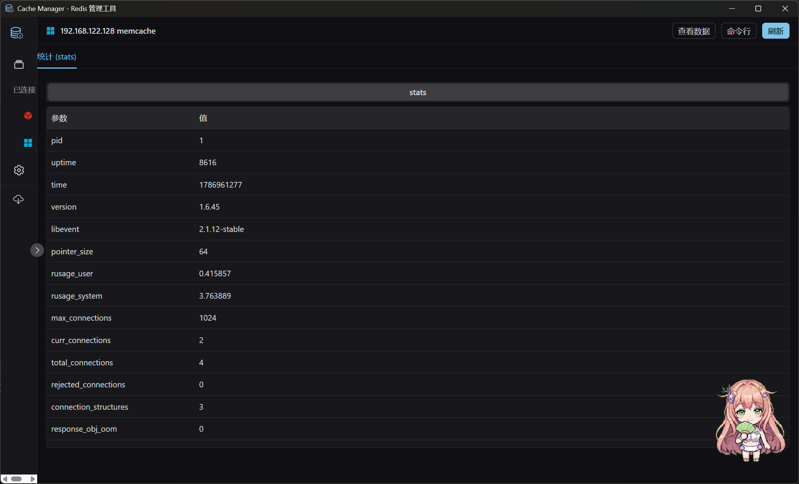
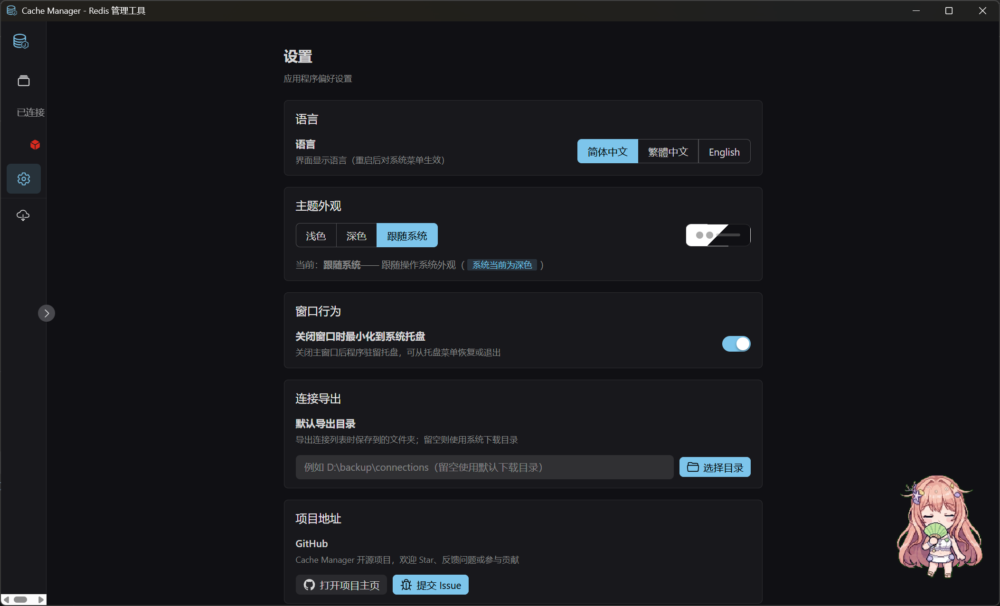

A cross-platform desktop cache management tool for Redis (Standalone / Master-Slave / Sentinel / Cluster) and Memcached, built with Tauri 2, Rust & Vue 3.

Everything you need to manage Redis & Memcached in one place
See Cache Manager in action








 tokio
tokio